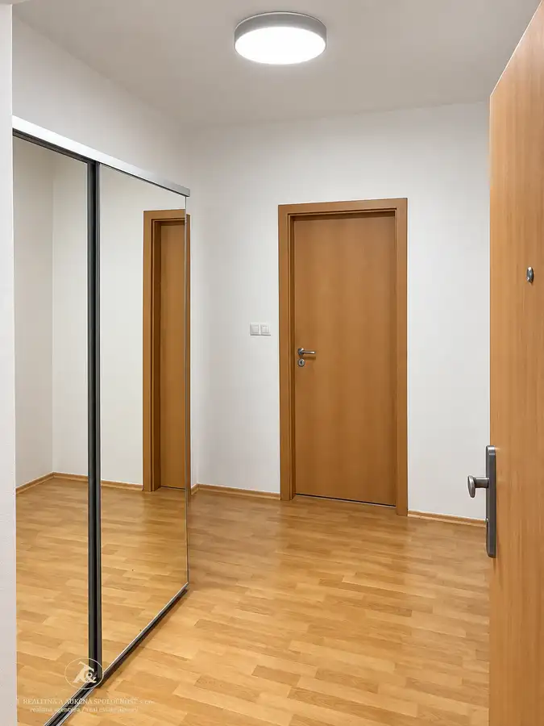
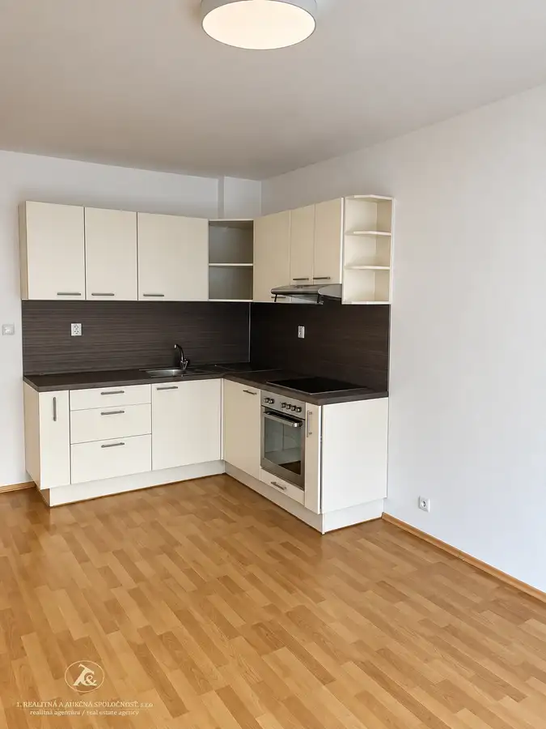
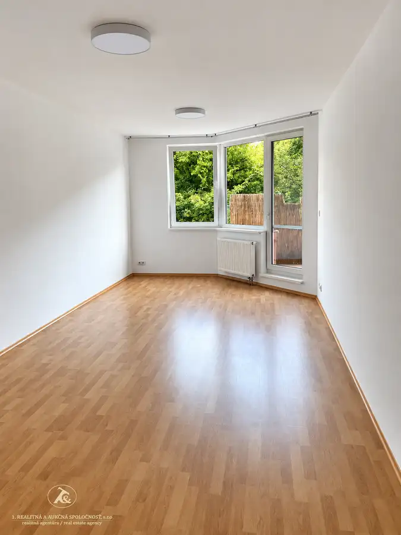
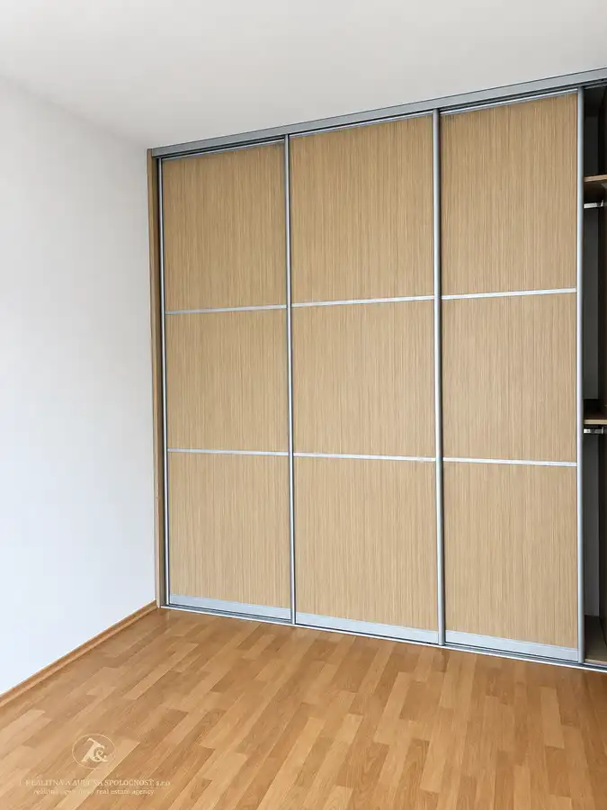

Atraktívny 2-izbový byt v Ružinove – ideálny na bývanie aj investíciu
Ružinov, Bratislava





- Dispozícia2-izbový
- Plocha69 m²
- Poschodie2.
- StavKompletná rekonštrukcia
- VlastníctvoOsobné
O nehnuteľnosti
2-IZBOVÝ Byt -apartmán V PROJEKTE JÉGEHO ALEJRužinov – Nivy | veľká loggia | výborná mestská lokalitaPonúkame na predaj 2-izbový apartmán v obľúbenom projekte Jégeho alej, situovanom v atraktívnej lokalite Bratislava – Ružinov, Nivy.Apartmán je vhodnou voľbou pre klienta, ktorý hľadá praktické mestské bývanie s výbornou dostupnosťou, ale zároveň môže predstavovať zaujímavú príležitosť aj ako investičná nehnuteľnosť na prenájom.HLAVNÉ BENEFITY:2-izbový apartmán2. poschodiebytový dom s výťahomveľká loggiavýstup na loggiu z obývacej a kuchynskej časti bytuatraktívna lokalita Ružinov – Nivyobľúbený projekt Jégeho alejvhodné na vlastné bývanie aj investíciuPRAKTICKÉ BÝVANIE S VEĽKOU LOGGIOUApartmán sa nachádza na 2. poschodí bytového domu s výťahom.Jeho výrazným benefitom je priestranná loggia s výstupom z obývacej izby ktorá príjemne rozširuje obytný priestor. Ponúka miesto na rannú kávu, oddych, posedenie či relax a zároveň vytvára príjemné prepojenie interiéru s vonkajším priestorom. Byt je aktuálne voľný,momentálne už neobývaný novo vymaľovaný a pripravený pre svojho nového majiteľa. V celom byte sú nové moderné led svietenia. Neutrálny interiér poskytuje ideálny priestor na vlastné zariadenie a ponúka možnosť vytvoriť si moderné a útulné bývanie presne podľa vlastných predstáv. 2-izbová dispozícia je praktickým riešením pre jednotlivca alebo pár a zároveň ponúka zaujímavý potenciál aj z pohľadu prenájmu.JÉGEHO ALEJ – MESTO NA DOSAHProjekt Jégeho alej sa nachádza v žiadanej lokalite Ružinov – Nivy, ktorá ponúka komfortné mestské bývanie s výbornou dostupnosťou.V bezprostrednom okolí je k dispozícii kompletná občianska vybavenosť – obchody, služby, reštaurácie, kaviarne, športoviská aj možnosti na oddych.Výhodou je tiež blízkosť Nív, autobusovej stanice a nového downtownu, ako aj dobré dopravné spojenie do centra Bratislavy a ďalších častí mesta.Všetko potrebné v pešej dostupnostiVeľkou výhodou lokality je dostupnosť OC CENTRAL, kde sú k dispozícii obchody, gastronómia, služby, supermarket, lekáreň, bankové služby, fitness a ďalšie prevádzky. V širšom okolí sa nachádza aj trhovisko Miletičova, ktoré patrí medzi obľúbené miesta na nákup čerstvých potravín.Pre aktívny život ponúka okolie množstvo možností. V dostupnosti sa nachádza Zimný štadión Ondreja Nepelu, Národný futbalový štadión a Národné tenisové centrum, ako aj ďalšie športové a voľnočasové možnosti. Výborná dopravná dostupnosťLokalita je veľmi dobre napojená na mestskú hromadnú dopravu. Trnavské mýto je približne 325 m od projektu a v okolí sa nachádzajú viaceré zastávky MHD vrátane zastávky Zimný štadión. Výhodou je tiež dobré napojenie na hlavné mestské komunikácie.BÝVANIE AJ INVESTÍCIAApartmán môže byť zaujímavou voľbou pre klienta, ktorý hľadá komfortné bývanie v meste, ale aj pre záujemcu uvažujúceho o investícii a následnom prenájme.Kombinácia 2-izbovej dispozície, veľkej loggie s výstupom z oboch izieb a atraktívnej lokality vytvára praktický priestor na každodenné bývanie aj potenciálne investičné využitie.PROFESIONÁLNY REALITNÝ A HYPOTEKÁRNY SERVISMgr. Lívia Hološovárealitný maklér / hypotekárny špecialista+421 908 769 429 livia.holosova@realitna.skPoskytujem komplexný servis pri predaji nehnuteľnosti – od prípravy a profesionálnej prezentácie nehnuteľnosti, cez komunikáciu so záujemcami až po úspešné dokončenie obchodu. Zároveň zabezpečujem hypotekárne poradenstvo ako hypo-špecialista s licenciou v NBS.
Parametre
- Cena vrátane energií
- Nie
- Druh
- 2 izbový byt
- Dátum zverejnenia
- 22. 09. 2026
- Energetická náročnosť
- Energeticky úsporný
- Energetický certifikát budovy
- nie je
- Energie
- 141
- Plocha lodžie
- 6.71 m²
- Podlažie
- 2
- Počet izieb / miestností
- 2
- Počet lodžií
- 1
- Rok kolaudácie
- 2011
- Rok poslednej rekonštrukcie
- 2025
- Rok výstavby
- 2011
- Stav nehnuteľnosti
- Kompletná rekonštrukcia
- Telekomunikácie
- Internet
- Typ
- Predaj
- Typ konštrukcie
- Tehlová
- Umiestnenie
- Ďalšie nadzemné podlažie
- Vlastníctvo
- Osobné
- Vybavenie
- Lodžia, Verejné parkovanie, Výťah
- Vykurovanie
- Ústredné
- Zariadenie
- Čiastočne zariadené
- Úžitková plocha
- 69 m²
Kde to je


Mohlo by Vás zaujímať
 BytNové
390 000 €Veľkorysý byt vhodný pre rodinu aj prácu z domu
Staré Mesto, Bratislava
4-izbový125 m²6. podlažie
BytNové
390 000 €Veľkorysý byt vhodný pre rodinu aj prácu z domu
Staré Mesto, Bratislava
4-izbový125 m²6. podlažie
 BytNové
226 000 €Novostavba bytu -Slnečnice mesto - BA -Petržalka
Petržalka, Bratislava
2-izbový60 m²1. podlažie
BytNové
226 000 €Novostavba bytu -Slnečnice mesto - BA -Petržalka
Petržalka, Bratislava
2-izbový60 m²1. podlažie
 BytNové
143 000 €Na PREDAJ - praktické bývanie v Senci | 2-izbová dispozícia + balkón aj kobka
Senec
2-izbový35.46 m²3. podlažie
BytNové
143 000 €Na PREDAJ - praktické bývanie v Senci | 2-izbová dispozícia + balkón aj kobka
Senec
2-izbový35.46 m²3. podlažie